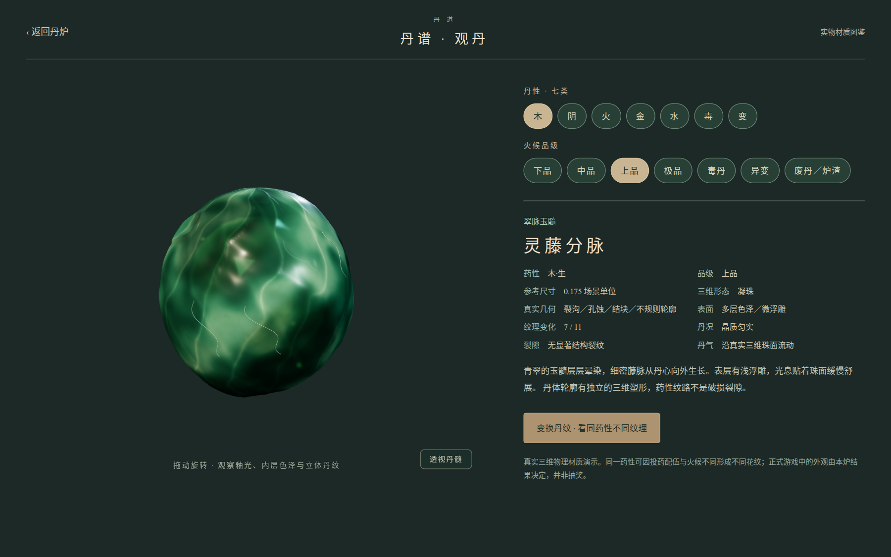
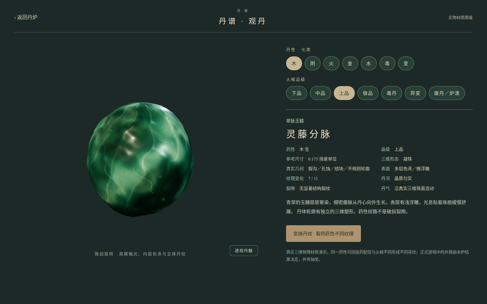
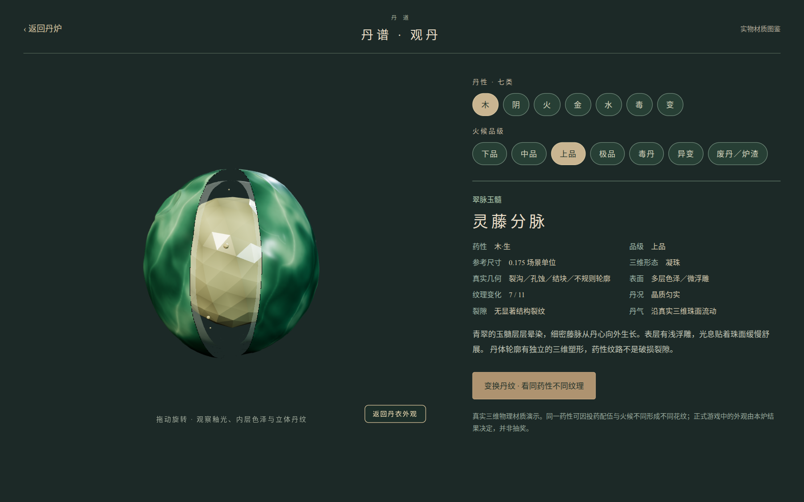
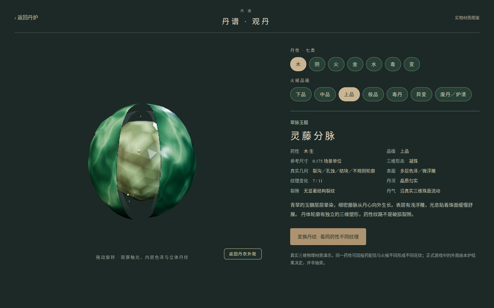
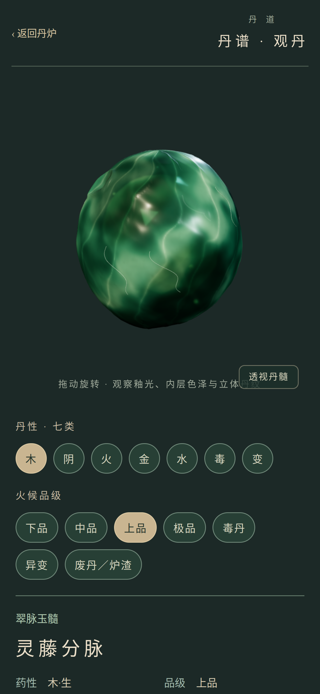
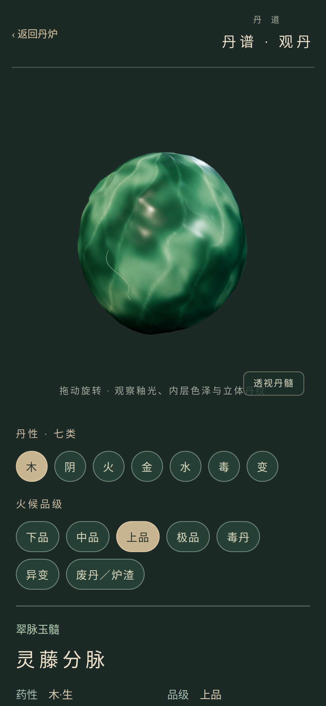
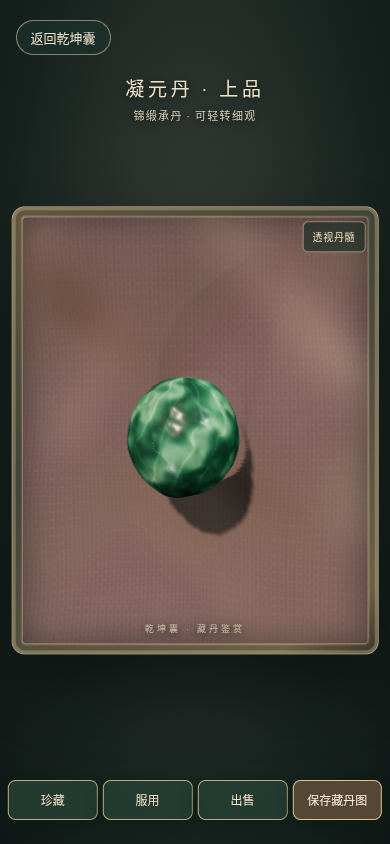

丹药细节：真实新旧对照
同一种丹、同一纹理种子、同一机位的实际 Three.js WebGL2 画面。这里的截图和短片没有使用生成图片假冒游戏内容。
01 · 正常外观，精度提升是否看得出来？


02 · 三层丹髓剖视，同一颗丹


03 · 手机尺寸：同样画面，更少绘制


| 真实GPU运行的模拟手机指标 | P0-04 | P0-04b |
|---|---|---|
| 画布像素数 | 586,440 | 474,579（减少约19%） |
| 丹谱三角面数 | 旧桌面网格约142,616 | 46,848 |
| 390×844 布局与剖视 | 正常 | 正常 |
以上是桌面 NVIDIA Chrome 的手机触屏模拟，不是三星实体手机 FPS。手机前台使用其他应用，因此未中断用户操作。
04 · 真正录制的开炉短片与锦缎收藏
10 秒真实 3D 开炉与丹药展示，原始录像约 147 个真实画面帧。MP4 为兼容转码，不能把补帧误认为原生 24 FPS。


214/214 自动测试通过 · 浏览器报错 0 · 完整炼丹及两张真实 PNG 导出通过。候选版本，尚未取得美术最终签收、实体 Android FPS、iOS 录制与投放结果。